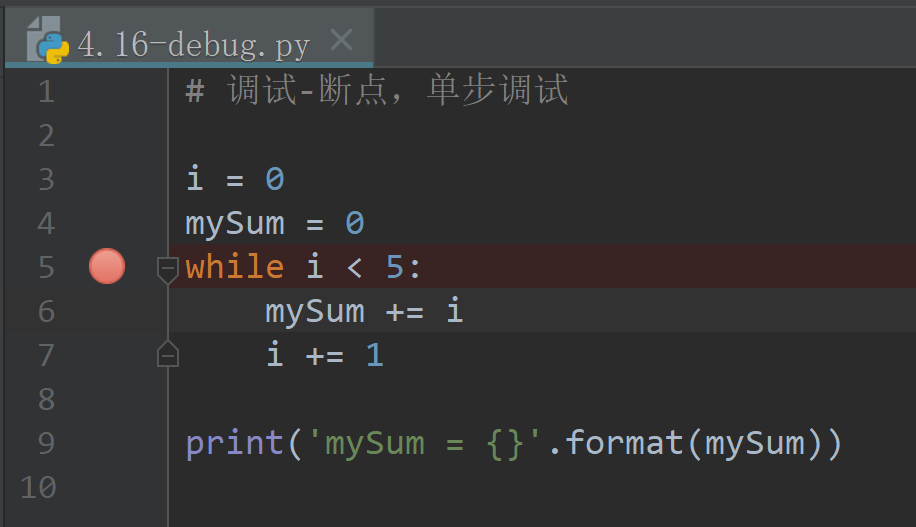
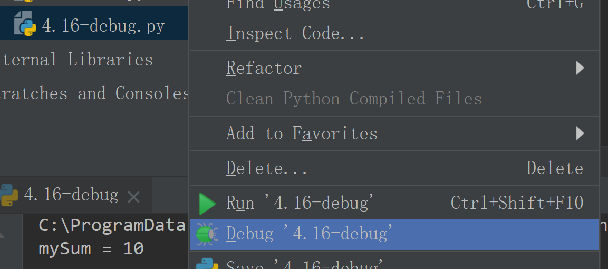
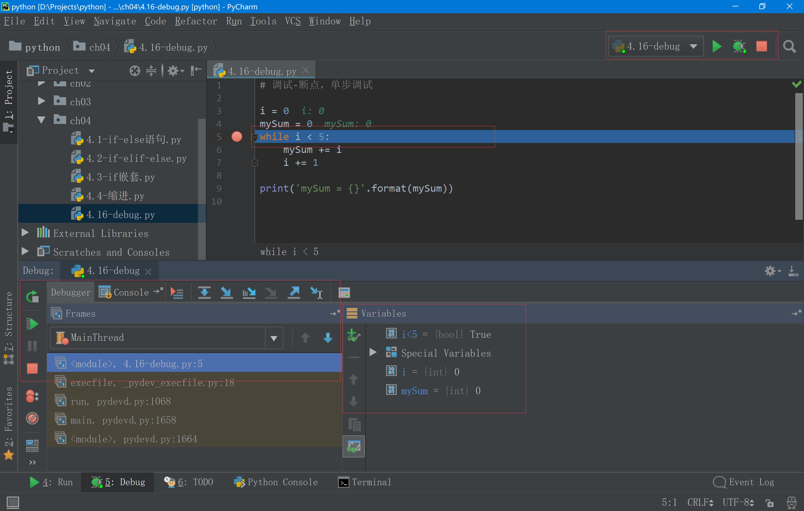
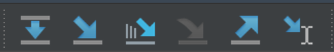
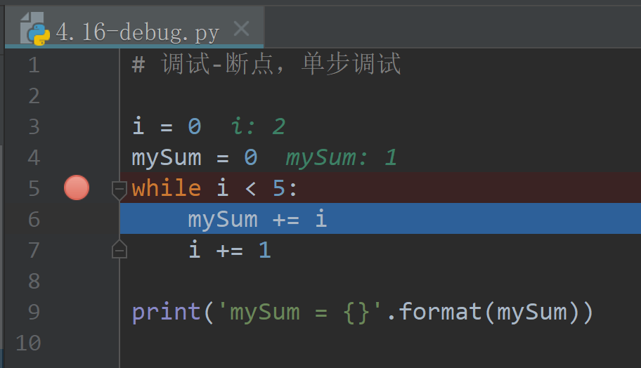

4.7 调试和断言
调试
在程序编写过程中，开发环境会对代码中的语法错误进行检查，确保程序没有语法错误。
但是没有语法错误的代码，可能会有逻辑上的问题，这些问题在代码执行时会导致和预期不一致的结果，这需要进行调试来发现。
调试有几种常用方法，下面介绍最基本的断点调试。
什么叫断点
程序代码在执行时，按照语句为单位，全速执行，错误的根源可能不容易发现。我们可以在某一条语句上设置断点，让程序执行到这条语句时停下来，然后控制程序一句一句的执行，观察此时程序中各个变量的值，找出程序中的逻辑问题。
例如：4.16-debug.py
# 调试-断点，单步调试
i = 0
mySum = 0
while i < 5:
mySum += i
i += 1
print('mySum = {}'.format(mySum))
在这个程序中，预期是求1~5的求和，但是实际结果为：
mySum = 10
循环进行了5次，但是结果为10，预期应为1+2+3+4+5=15
通过分析实际结果和预期结果的差异，大致估计问题出现在while循环中，所以在循环开始的地方加上断点。
在PyCharm中，在代码编写区域左边，和代码行数中间点击，对齐的代码行就加上断点：

红点代表这一行加上了断点，然后在文件上右键点击，选择debug运行：

程序启动之后，遇到断点，就会停下来：

在PyCharm界面中，右上角的快捷工具条表示调试正在进行中，可以按红色方块按钮停止这次调试。
中间代码窗口中，高亮的一条代表即将要执行的语句。
左下角的debugger窗口，上面的几个按钮，分别代表：单步执行（此文件之内的语句），单步执行（能执行到别的函数内部），单步执行（能执行到别的函数内部，但仅限于自己编写的代码），强制单步执行进入，单步执行出来（全速一直执行到return语句），执行到光标所在行。
右下角的变量窗口会列出代码中使用的变量，也可以点击创建一个感兴趣的表达式进行观察，例如加入i<5这样的条件判断。
可以使用单步执行（本例中，选择哪一个都可以），控制程序一句一句的执行，查看变量的值。

通过查看变量分析，程序的逻辑问题找到，每次加到mySum中的i值是从0开始，而不是从1开始，所以修改代码为：
mySum += i+1
于是程序执行的实际结果为15，和预期结果一致。
编写程序的过程中，难免会有出现问题的情况，所以调试代码是程序员需要具备的基本能力。
在合适的地方加上断点，控制程序单步执行，观察变量或者表达式的值，最终找出问题。
assert断言
Python assert断言是声明其布尔值必须为真的判定，如果发生异常就说明表达式为假。assert断言语句用来测试表达式，其返回值为假，就会触发异常。
assert断言的格式为：
assert 要判断表达式, '字符串'
当判断的表达式为真时，assert语句不做任何动作，当表达式为假时，会触发异常，并将字符串内容输出。字符串可以省略。
例如：4.17-assert.py
# 调试-断言
i = 0
mySum = 0
while i < 5:
mySum += i
i += 1
assert mySum == 15, 'mySum不等于15'
print('mySum = {}'.format(mySum))
输出结果为：
Traceback (most recent call last):
File "d:/Projects/ch04/4.17-assert.py", line 9, in <module>
assert mySum == 15, 'mySum不等于15'
AssertionError: mySum不等于15
断言也是良好的调试工具，可以帮助检查代码中变量或者表达式的值是否符合预期。相对于单纯的print输出，在表达式为真符合预期时，assert不输出任何东西，会让错误信息更显著。